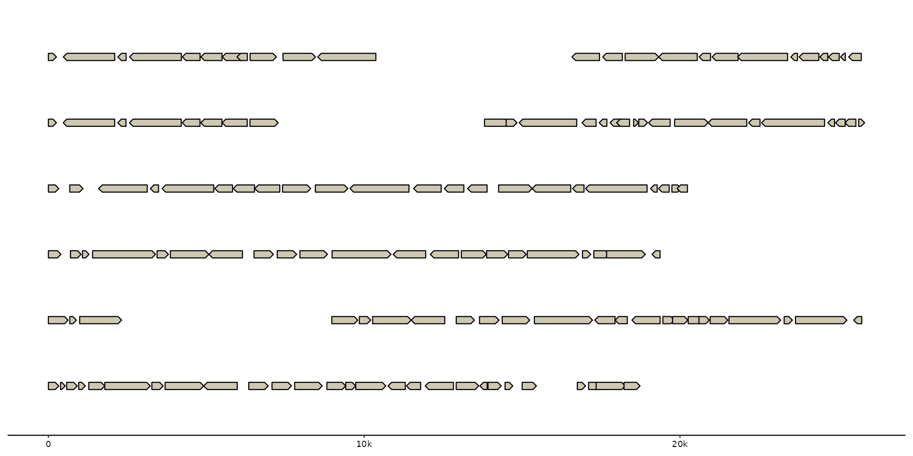
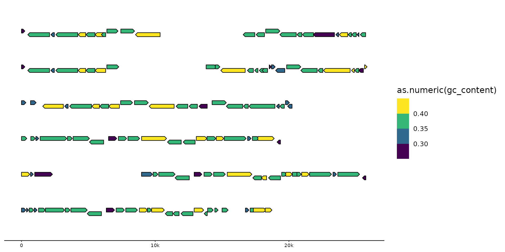
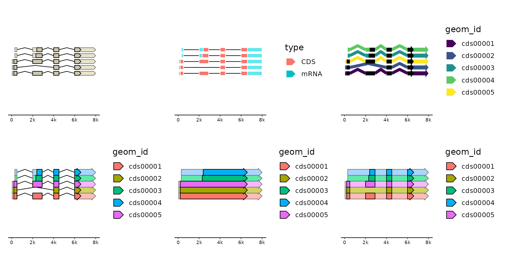
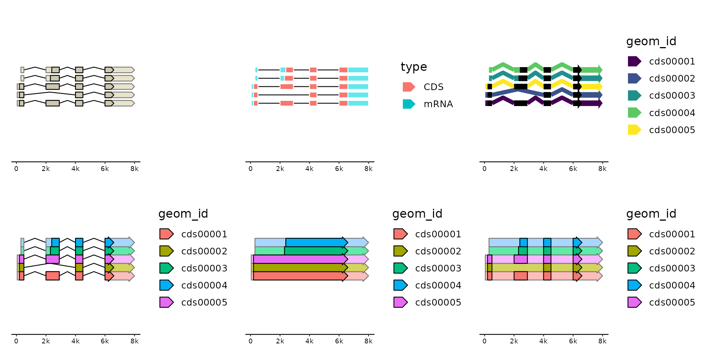

Draw coding sequences, mRNAs and other non-coding features. Supports
multi-exon features. CDS and mRNAs in the same group are plotted together.
They can therefore also be positioned as a single unit using the position
argument.
Usage
geom_gene(
mapping = NULL,
data = genes(),
stat = "identity",
position = "identity",
na.rm = FALSE,
show.legend = NA,
inherit.aes = TRUE,
size = 2,
rna_size = size,
shape = size,
rna_shape = shape,
intron_shape = size,
intron_types = c("CDS", "mRNA", "tRNA", "tmRNA", "ncRNA", "rRNA"),
cds_aes = NULL,
rna_aes = NULL,
intron_aes = NULL,
...
)Arguments
- mapping
Set of aesthetic mappings created by
aes(). If specified andinherit.aes = TRUE(the default), it is combined with the default mapping at the top level of the plot. You must supplymappingif there is no plot mapping.- data
The data to be displayed in this layer. There are three options:
If
NULL, the default, the data is inherited from the plot data as specified in the call toggplot().A
data.frame, or other object, will override the plot data. All objects will be fortified to produce a data frame. Seefortify()for which variables will be created.A
functionwill be called with a single argument, the plot data. The return value must be adata.frame, and will be used as the layer data. Afunctioncan be created from aformula(e.g.~ head(.x, 10)).- stat
The statistical transformation to use on the data for this layer. When using a
geom_*()function to construct a layer, thestatargument can be used the override the default coupling between geoms and stats. Thestatargument accepts the following:A
Statggproto subclass, for exampleStatCount.A string naming the stat. To give the stat as a string, strip the function name of the
stat_prefix. For example, to usestat_count(), give the stat as"count".For more information and other ways to specify the stat, see the layer stat documentation.
- position
A position adjustment to use on the data for this layer. This can be used in various ways, including to prevent overplotting and improving the display. The
positionargument accepts the following:The result of calling a position function, such as
position_jitter(). This method allows for passing extra arguments to the position.A string naming the position adjustment. To give the position as a string, strip the function name of the
position_prefix. For example, to useposition_jitter(), give the position as"jitter".For more information and other ways to specify the position, see the layer position documentation.
- na.rm
remove na values
- show.legend
logical. Should this layer be included in the legends?
NA, the default, includes if any aesthetics are mapped.FALSEnever includes, andTRUEalways includes. It can also be a named logical vector to finely select the aesthetics to display.- inherit.aes
If
FALSE, overrides the default aesthetics, rather than combining with them. This is most useful for helper functions that define both data and aesthetics and shouldn't inherit behaviour from the default plot specification, e.g.borders().- size, rna_size
the size of the gene model, aka the height of the polygons.
rna_sizeonly applies to non-coding parts of the gene model, defaults to size.- shape, rna_shape
vector of height and width of the arrow tip, defaults to size. If only one value is provided it is recycled. Set '0' to deactivates arrow-shaped tips.
rna_shapeonly applies to non-coding parts of the gene model, defaults to shape.- intron_shape
single value controlling the kink of the intron line. Defaults to size. Set 0 for straight lines between exons.
- intron_types
introns will only be computed/drawn for features with types listed here. Set to "CDS" to plot mRNAs as continous features, and set to NA to completely ignore introns.
- cds_aes, rna_aes, intron_aes
overwrite aesthetics for different model parts. Need to be wrapped in
ggplot2::aes(). NOTE: These remappings are applied after the data has been transformed and mapped by the plot scales (seeggplot2::after_scale()). So you need to map between aesthetic names (not data columns) and with standardized names, i.e. British English spelling. These mappings can be used to dynamically change parts of the gene model. For example, to change the color of introns from a hard-coded "black" to the same color used to fill the CDS you could specifyintron_aes=aes(colour = fill). By default,rna_aesis remapped withaes(fill=colorspace::lighten(fill, .5), colour=colorspace::lighten(colour, .5))to give it a lighter appearence than the corresponding CDS but in the same color.- ...
passed to layer params
Aesthetics
geom_gene() understands the following aesthetics (required aesthetics are in bold):
Learn more about setting these aesthetics in vignette("ggplot2-specs").
'type' and 'group' (mapped to 'type' and 'geom_id' by default) power the proper recognition of CDS and their corresponding mRNAs so that they can be drawn as one composite object. Overwrite 'group' to plot CDS and mRNAs independently.
'introns' (mapped to 'introns') is used to compute intron/exon boundaries.
Use the parameter intron_types if you want to disable introns.
Examples
gggenomes(genes = emale_genes) +
geom_gene()
#> No seqs provided, inferring seqs from feats

gggenomes(genes = emale_genes) +
geom_gene(aes(fill = as.numeric(gc_content)), position = "strand") +
scale_fill_viridis_b()
#> No seqs provided, inferring seqs from feats

g0 <- read_gff3(ex("eden-utr.gff"))
#> Harmonizing attribute names
#> • ID -> feat_id
#> • Name -> name
#> • Parent -> parent_ids
#> • Target -> target
#> Features read
#> # A tibble: 8 × 3
#> source type n
#> <chr> <chr> <int>
#> 1 NA CDS 5
#> 2 NA TF_binding_site 1
#> 3 NA cDNA_match 1
#> 4 NA exon 5
#> 5 NA five_prime_UTR 1
#> 6 NA gene 1
#> 7 NA mRNA 5
#> 8 NA three_prime_UTR 1
gggenomes(genes = g0) +
# all features in the "genes" regardless of type
geom_feat(data = feats(genes)) +
annotate("text", label = "geom_feat", x = -15, y = .9) + xlim(-20, NA) +
# only features in the "genes" of geneish type (implicit `data=genes()`)
geom_gene() +
geom_gene_tag(aes(label = ifelse(is.na(type), "<NA>", type)), data = genes(.gene_types = NULL)) +
annotate("text", label = "geom_gene", x = -15, y = 1) +
# control which types are returned from the track
geom_gene(aes(y = 1.1), data = genes(.gene_types = c("CDS", "misc_RNA"))) +
annotate("text", label = "gene_types", x = -15, y = 1.1) +
# control which types can have introns
geom_gene(
aes(y = 1.2, yend = 1.2),
data = genes(.gene_types = c("CDS", "misc_RNA")),
intron_types = "misc_RNA"
) +
annotate("text", label = "intron_types", x = -15, y = 1.2)
#> No seqs provided, inferring seqs from feats
#> Warning: Ignoring unknown aesthetics: yend
 # spliced genes
library(patchwork)
gg <- gggenomes(genes = g0)
#> No seqs provided, inferring seqs from feats
gg + geom_gene(position = "pile") +
gg + geom_gene(aes(fill = type),
position = "pile",
shape = 0, intron_shape = 0, color = "white"
) +
# some fine-control on cds/rna/intron after_scale aesthetics
gg + geom_gene(aes(fill = geom_id),
position = "pile",
size = 2, shape = c(4, 3), rna_size = 2, intron_shape = 4, stroke = 0,
cds_aes = aes(fill = "black"), rna_aes = aes(fill = fill),
intron_aes = aes(colour = fill, stroke = 2)
) +
scale_fill_viridis_d() +
# fun with introns
gg + geom_gene(aes(fill = geom_id), position = "pile", size = 3, shape = c(4, 4)) +
gg + geom_gene(aes(fill = geom_id),
position = "pile", size = 3, shape = c(4, 4),
intron_types = c()
) +
gg + geom_gene(aes(fill = geom_id),
position = "pile", size = 3, shape = c(4, 4),
intron_types = "CDS"
)

# spliced genes
library(patchwork)
gg <- gggenomes(genes = g0)
#> No seqs provided, inferring seqs from feats
gg + geom_gene(position = "pile") +
gg + geom_gene(aes(fill = type),
position = "pile",
shape = 0, intron_shape = 0, color = "white"
) +
# some fine-control on cds/rna/intron after_scale aesthetics
gg + geom_gene(aes(fill = geom_id),
position = "pile",
size = 2, shape = c(4, 3), rna_size = 2, intron_shape = 4, stroke = 0,
cds_aes = aes(fill = "black"), rna_aes = aes(fill = fill),
intron_aes = aes(colour = fill, stroke = 2)
) +
scale_fill_viridis_d() +
# fun with introns
gg + geom_gene(aes(fill = geom_id), position = "pile", size = 3, shape = c(4, 4)) +
gg + geom_gene(aes(fill = geom_id),
position = "pile", size = 3, shape = c(4, 4),
intron_types = c()
) +
gg + geom_gene(aes(fill = geom_id),
position = "pile", size = 3, shape = c(4, 4),
intron_types = "CDS"
)
